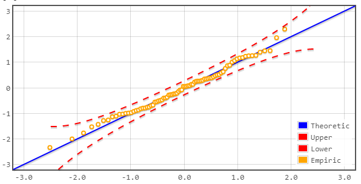
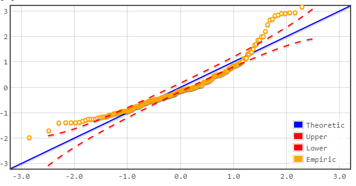
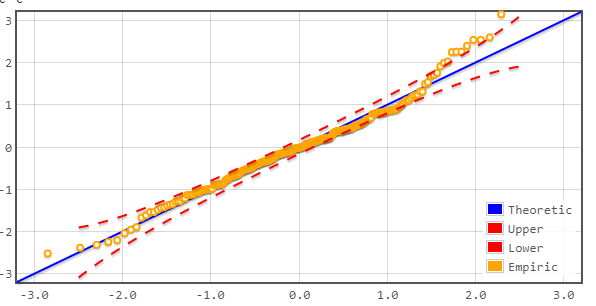
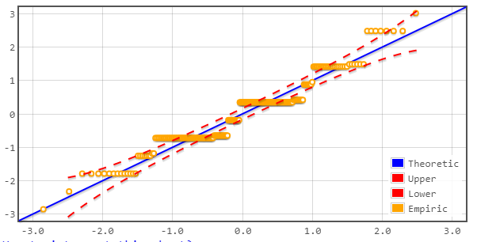

QQ plot allows you to examine how well model errors fits normal distribution.
The plot contains the following items:
1. Yellow dots - each dot represent a seperate model error (residual)
2. Blue line - When data fits normal distribution perfectly all residuals lie on the blue line
3. Red curves - These are the theoretic error confidence intervals where we expect residuals to lie
Common QQ plot shapes:
1. Data fits normal distribution well:

2. Data does not fit normal distribution at all:

3. Model has some deviation for normality. Examples: long tails that are not expected in normal distribution, non-continuous distribution nature:


In some cases (especially when only rough assesment is needed) these are applicable.